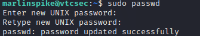
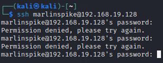
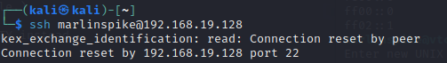

< Retour au sommaire
Blocage de l'accès de l'administrateur à ce système
Bloquer l'accès de l'administrateur peut se faire de plusieurs façons :
- On peut changer son mot de passer
- On peut aussi totalement casser la machine
Pour le bien de ce document nous allons faire les deux.
Changement du mot de passe
Étant déjà connecté en SSH à la machine sur le compte de l'administrateur, il suffit de taper la commande suivante et de changer le mot de passe de l'utilisateur courant:
sudo passwd
L'administrateur ne peut maintenant plus se connecter avec son mot de passe "marlinspike" :

Casser la machine
Pour casser facilement l'accès à tous les utilisateurs de la machine, il suffit de supprimer le fichier /etc/passwd :
sudo rm /etc/passwdIl est déconseillé de le faire si vous voulez continuez a chercher des informations sur la VM car vous ne pourrez plus le faire.

Il n'est même plus possible de se connecter en SSH.
L'accès à la machine pour l'administrateur est bloqué.